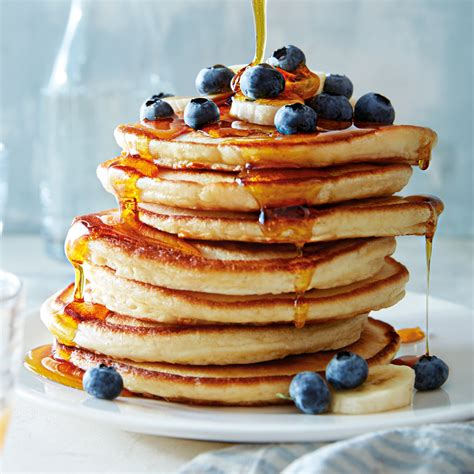

Pancakes
Home

Description
A pancake, also known as a hotcake, griddlecake, or flapjack, is a flat type of batter bread like cake, often thin and round, prepared from a starch-based batter that may contain eggs, milk, and butter, and then cooked on a hot surface such as a griddle or frying pan. Archaeological evidence suggests that pancakes were probably eaten in prehistoric societies.
Ingredients
- 1 1/2 cups all-purpose flour
- 3 1/2 tsp. baking powder
- 1 tbsp. white sugar
- 1/4 tsp. salt, or more to taste
- 1 1/4 cups milk
- 3 tbsp. butter, melted
- 1 large egg
Steps
- Stir flour, baking powder, sugar, and salt together in a large bowl.
- Add milk, butter, and egg, stirring in slowly until smooth.
- Heat a griddle or pan over medium-high heat.
- Pour ~1/4 cup batter per pancake, cooking until edges are brown.
- Flip pancakes, then remove when fully cooked.
- Serve hot, with butter, maple syrup, or fruit.